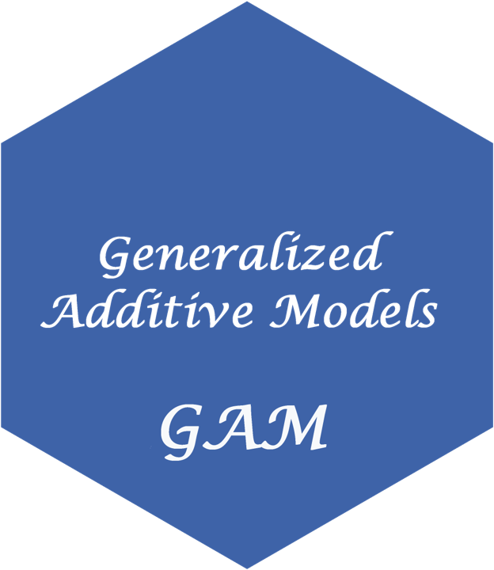

Bindings for Additive TidyModels 


additive supports Generalized Additive Models (GAM) using mgcv with parsnip/tidymodels.
Installation
The stable version of additive can be installed from CRAN using:
install.packages("additive")The development version of additive can be installed from GitHub using:
install.packages("pak")
pak::pkg_install("hsbadr/additive")Example
library(additive)
set.seed(2020)
dat <- gamSim(1, n = 400, dist = "normal", scale = 2)
additive_mod <-
additive() |>
set_engine("mgcv") |>
fit(
y ~ s(x0) + s(x1) + s(x2) + s(x3),
data = dat
)
summary(additive_mod$fit)For more details, get started with additive.
Citation
To cite additive in publications, please use:
citation("additive")Hamada S. Badr (2024): additive: Bindings for Additive TidyModels, Comprehensive R Archive Network (CRAN). URL: https://hsbadr.github.io/additive/.
Contributing
This project is released with a Contributor Code of Conduct. By contributing to this project, you agree to abide by its terms.
For questions and discussions about tidymodels packages, modeling, and machine learning, please post on RStudio Community.
If you think you have encountered a bug, please submit an issue.
Either way, learn how to create and share a reprex (a minimal, reproducible example), to clearly communicate about your code.
Check out further details on contributing guidelines for tidymodels packages and how to get help.